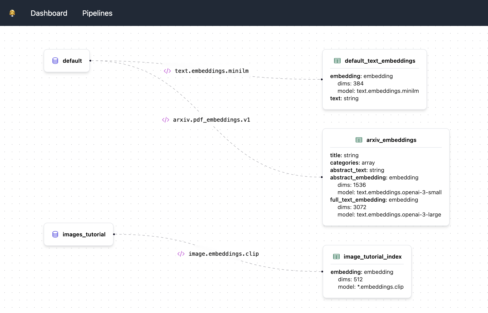

Installation
To run Lexy locally, you'll need Docker installed. You'll also need Python 3.11 or greater. To install Lexy, you can either build from source (recommended) or install from PyPI (standalone mode).
Build from source
Clone the repo
Install dependencies
First create a virtual environment. Make sure that you're using Python 3.11 or greater. You can check your Python
version by running python3 --version.
# Change to the lexy directory
cd lexy
# Create a virtualenv
python3 -m venv venv
source venv/bin/activate
Next, install the dev dependencies. This will also create a .env file in the working directory if it doesn't
exist already.
Run docker compose
To build and run the docker containers, run the following command:
To stop the containers, run docker compose down.
Install from PyPI
Use this method if you're already familiar with Lexy and are using it as a dependency in your own project. You'll need to provide instances of the Lexy server, worker, and database. See the Quickstart guide for more information and a detailed example.
# Install server
pip install lexy[all]
# Install Python client
pip install lexy-py
# Initialize Lexy
lexy init
# Optional: Create a docker-compose file
lexy docker
Configuring storage
In order to upload and store files to Lexy, you'll need to configure either Amazon S3 or Google Cloud Storage.
Amazon S3
To configure Amazon S3, you can use aws configure on the command line (recommended) or set the value of
AWS_ACCESS_KEY_ID and AWS_SECRET_ACCESS_KEY in your .env file.
If you choose to use aws configure, make sure to uncomment the following line in docker-compose.yaml
in order for your credentials to be available inside of the lexyserver container.
volumes:
# Uncomment the following line to mount local AWS credentials
- $HOME/.aws/credentials:/root/.aws/credentials:ro
You'll also need to specify an S3 bucket for file storage (for which your AWS credentials should have full access).
You can do so by adding DEFAULT_STORAGE_BUCKET=<name-of-your-S3-bucket> to your .env file.
Remember to rebuild your dev containers for the change to take effect (run make rebuild-dev-containers on the
command line).
Google Cloud Storage
To use Google Cloud Storage, you'll need to set DEFAULT_STORAGE_SERVICE=gcs in your .env file. You'll also need to
create a service account, and set the GOOGLE_APPLICATION_CREDENTIALS environment variable to the path of your service
account credentials. You can do so by adding the following to your .env file:
You'll also need to specify a GCS bucket for file storage (for which your service account should have full access).
You can do so by adding DEFAULT_STORAGE_BUCKET=<name-of-your-GCS-bucket> to your .env file.
Remember to rebuild your dev containers for the change to take effect (run make rebuild-dev-containers on the
command line).
Example .env settings
Using OpenAI transformers
To use OpenAI embeddings in Lexy, you'll need to set the OPENAI_API_KEY environment variable. You can do so by adding
the following to your .env file:
Do this before building your docker containers. Or, if you've already run docker compose up, you can run the
following to rebuild the server and worker containers.
Lexy dashboard (WIP)
Lexy comes with a built-in dashboard to visualize pipelines. This is still under development, but you can run it locally.

To start the dashboard, make sure you have Node.js installed. Then, from the root directory, run the following commands:
The dashboard will be running at http://localhost:3000.
Where to find services
The server will be running at http://localhost:9900. In addition, you can find the following services.
| Service | URL | Notes |
|---|---|---|
| Lexy API | http://localhost:9900/docs | Swagger API docs |
| Flower | http://localhost:5556 | Celery task monitor |
| RabbitMQ | http://localhost:15672 | Username: guest, Password: guest |
| Postgres | http://localhost:5432 | Database: lexy, Username: postgres, Password: postgres |
| Project docs | http://localhost:8000 | Run make serve-docsUsername: lexy, Password: guest |
| Lexy dashboard | http://localhost:3000 | Dashboard to show pipelines (WIP) |
Troubleshooting
PyCharm issues
If your virtualenv keeps getting bjorked by PyCharm, make sure that you're following the instructions above verbatim,
and using venv instead of .venv for the path of your virtual environment.
Other issues
If you encounter any issues while installing or using Lexy, please open an issue on GitHub.